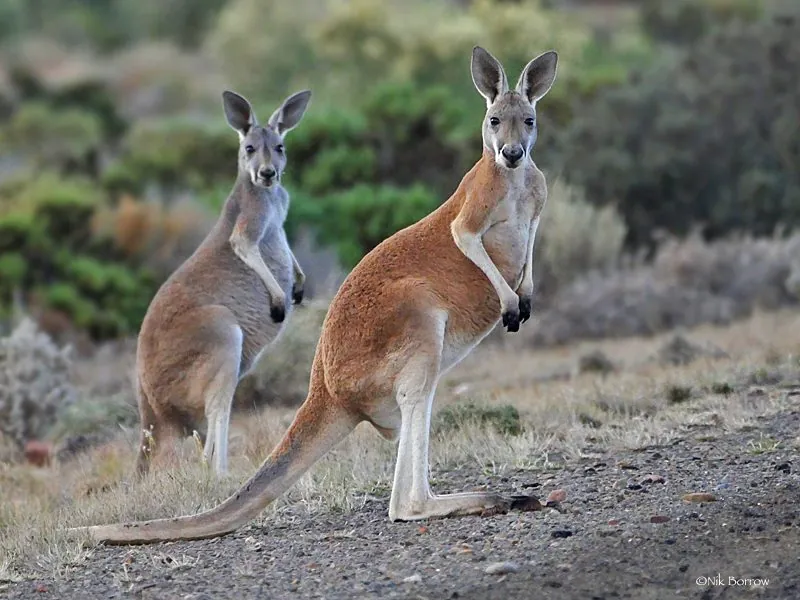

哺乳动物 · 动物界
红大袋鼠 Osphranter rufus

现存体型最大的有袋类，雄性红褐色、雌性偏蓝灰，以强健的后肢跳跃前进，时速可达 60 公里以上。
- 分类
- 门脊索动物门纲哺乳纲目双门齿目科袋鼠科属大袋鼠属
- 栖息环境
- 澳大利亚内陆的干旱草原、灌丛与荒漠
- 地理分布
- 澳大利亚大陆中部的干旱和半干旱地区
- 保护级别
- IUCN 无危（LC）
物种志
红大袋鼠体长 0.75–1.6 米，尾长 0.65–1.2 米，雄性体重 55–85 kg，雌性 18–40 kg，是现存最大的有袋类。雄性体色偏红褐，雌性偏蓝灰；前肢短小，后肢修长有力，尾巴粗壮，可支撑身体或跳跃时保持平衡。
红大袋鼠栖息于澳大利亚内陆的干旱草原、灌丛和荒漠，食物主要是草类和灌木嫩叶，可在缺水环境下依靠植物中的水分生活。它们结成 10 只左右的松散群体，黄昏后活动；跳跃时可双脚同时蹬地，时速可达 60 km/h 以上，单次跳跃可跨越 8 米。雌袋鼠有胚胎滞育能力，环境恶劣时延缓胚胎发育；幼仔出生时仅约 1 克，需爬进育儿袋继续发育约半年。作为澳大利亚的标志性动物，红大袋鼠种群总体稳定，但局部受干旱与人类活动影响。
形态与习性
- 食性草类与灌木嫩叶，可依靠植物水分生活
- 体长0.75–1.6 m，尾长 0.65–1.2 m
- 体重雄性 55–85 kg，雌性 18–40 kg
- 寿命野外约 15–20 年
- 繁殖胚胎可滞育，幼仔出生约 1 g，袋内发育约半年
- 跳跃时速可达 60 km/h 以上，单次跨越 8 m
- 社会结构约 10 只的松散群体
趣味知识
- 红大袋鼠是现存最大的有袋类，雄性体重可达 85 kg。
- 幼仔出生时仅约 1 g，要自己爬进育儿袋继续发育。
- 环境恶劣时雌袋鼠会让胚胎暂停发育，等条件好转再继续。
- 它跳跃时速可超过 60 km/h，单次跳跃能跨出约 8 米。